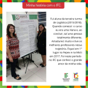

Sobre o IFC
O Instituto Federal Catarinense (IFC) foi criado pela Lei Federal nº 11.892, de 29 de dezembro de 2008, e teve origem na integração das escolas agrotécnicas de Concórdia, Rio do Sul e Sombrio e dos colégios agrícolas de Araquari e Camboriú, que eram vinculados à Universidade Federal de Santa Catarina. Hoje, a trajetória formativa do IFC se integra às demandas sociais e aos arranjos produtivas locais/regionais com cursos da educação profissional e tecnológica: qualificação profissional, educação profissional técnica de nível médio, graduação e pós-graduação – lato e stricto sensu.
O IFC possui atualmente 15 campi, distribuídos nas cidades de Abelardo Luz, Araquari, Blumenau, Brusque, Camboriú, Concórdia, Fraiburgo, Ibirama, Luzerna, Rio do Sul, Santa Rosa do Sul, São Bento do Sul, São Francisco do Sul, Sombrio e Videira, e a Reitoria, instalada na cidade de Blumenau.
Missão
Proporcionar educação profissional, atuando em Ensino, Pesquisa e Extensão, comprometida com a formação cidadã, a inclusão social, a inovação e o desenvolvimento regional.
Visão
Ser referência nacional em educação profissional, científica e tecnológica, para o mundo do trabalho, por meio da formação cidadã.
Horários de atendimento do IFC: 7h30 às 22h
Pesquisa, Pós-Graduação e Inovação
A coordenação de Pesquisa, Pós-Graduação e Inovação do Instituto Federal Catarinense (IFC)– Campus Videira tem como objetivos:
- Fomentar Projetos de Pesquisa;
-
Incentivar a Iniciação Científica (Ensino Médio/Técnico e Superior);
- Apoiar eventos de carácter científico;
- Incentivar a apresentação de trabalhos científicos;
- Apoiar e estimular a criação de novos cursos de Pós-Graduação Lato sensu e Stricto Sensu;
- Contribuir com as ações de Inovação.
Vídeo Institucional
Links Úteis
Galeria de imagens
-

-

-

-

- 